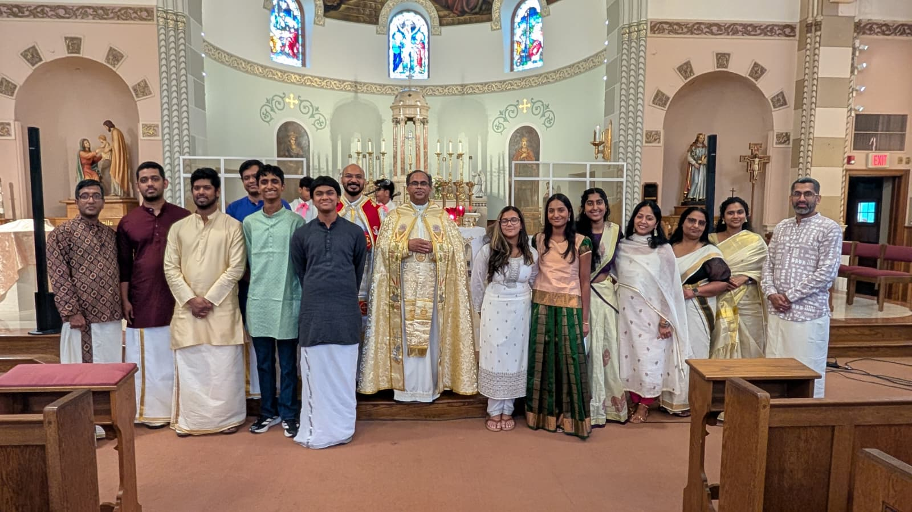

✦ ✦ ✦
Our CCD Program
Confraternity of Christian Doctrine — Faith formation rooted in the Syro Malabar tradition
About the Program
Our CCD program is dedicated to nurturing the faith of our children and youth within the rich tradition of the Syro Malabar Catholic Church. Guided by the teachings of Saint Thomas the Apostle and the Church's ancient liturgical heritage, we help young parishioners develop a deep and lasting relationship with God.
Classes are held every Sunday before the Holy Qurbana, giving families a seamless way to combine faith formation with weekly worship. Our dedicated teachers bring warmth, knowledge, and devotion to every class.
✦ ✦ ✦
Class Schedule
| Day | Time | Location | Notes |
|---|---|---|---|
| Every Sunday | 11:30 AM – 12:30 PM | 838 Kings Hwy E, Fairfield, CT | Immediately before Sunday Holy Mass |
✝ Classes follow the school year calendar. Please contact the parish for holiday schedule adjustments.
✦ ✦ ✦
Programs Offered
✝ Children's Faith Formation
Age-appropriate lessons introducing children to the life of Christ, the sacraments, and the Syro Malabar liturgical tradition. Includes preparation for First Holy Communion.
✝ Youth Confirmation Prep
A deeper journey into the Catholic faith for older youth, preparing them to receive the Sacrament of Confirmation and embrace their faith as young adults.
✝ Bible & Liturgy Studies
Scripture readings, liturgical seasons, and the meaning behind the Holy Qurbana — helping students connect worship to everyday life.
✦ ✦ ✦
Program Director
Mr. Pavan Antony
Religious Education Director
Pavan leads our faith formation programs for children, youth, and adults. With a passion for the Syro Malabar tradition, he designs a curriculum that is both engaging and deeply rooted in the Church's heritage. For inquiries about enrollment or the program, please reach out to the parish.
✦ ✦ ✦
Photo Gallery
Moments from our faith formation journey